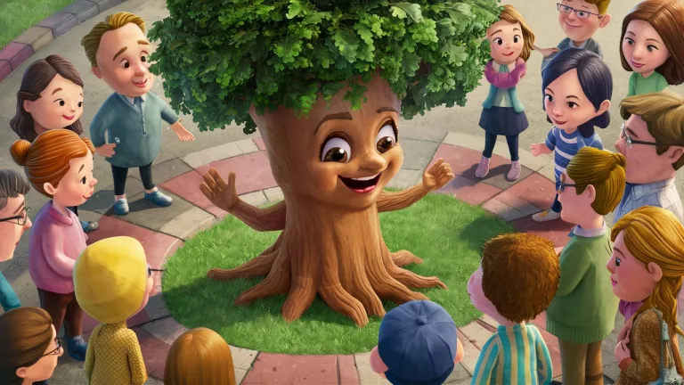
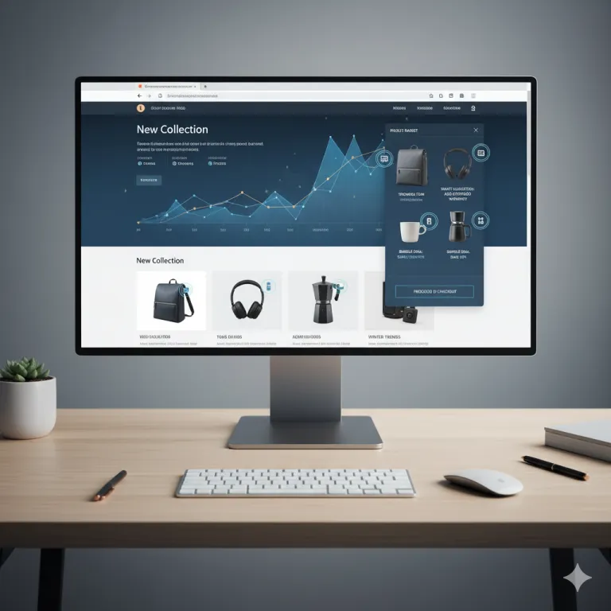

TalentScout AI ↗
Candidate-screening assistant: resume parsing, role-specific question generation and running confidence scoring with downloadable reports.
85% accuracy-60% hiring time
LangChain · LangGraph · Groq · Streamlit
Agents, retrieval, computer vision, full-stack systems and scientific ML. Each card links to its live demo or source. Every number is from the real project.
Candidate-screening assistant: resume parsing, role-specific question generation and running confidence scoring with downloadable reports.
Conversational food-ordering agent with RAG menu retrieval, cart management, promotions, order history and an admin sales dashboard.
Conference summarizer with speaker diarization, topic mining and action-item extraction for distributed teams.
Lightweight analytics copilot converting natural language into SQL over hundreds of CSV datasets.
 R-01
R-01
RAG grading platform with plagiarism detection, auto question-paper generation and a timed test environment.
Fine-tuned LLM with FAISS dense retrieval and GPU-optimised TTS over 15+ textbooks for retrieval-conditioned speech.
RAG pipeline that reads PDF CAD designs (vision + text) and generates parameterised OpenSCAD from natural-language queries.
 V-01
V-01
Reverse-engineers the prompt behind an AI-generated image or video via CV signal extraction and semantic retrieval.
Clinical diagnostics over 2,524 tongue images: coating, color and crack analysis with objective scoring.

V-03Real-time medicinal-plant identification with an integrated guidance chatbot.
Real-time drowsiness detection using eye-aspect-ratio analysis for workplace-safety monitoring.
 S-01
S-01
Digital-wellbeing app and Chrome extension turning browsing behaviour into real-world analogies with AI insights.
Contact-intelligence API with global search by name or number and embedded spam scoring, using Factory and Observer patterns.

S-03Hybrid recommender personalising storefronts, scoring similarity from price, purchase patterns and customer overlap.
Evaluates resumes and interview videos against a job description, scoring correctness and communication with recommendations.
Automated university timetable generation using genetic algorithms under hundreds of course-faculty constraints.
Interactive visualisation platform for 15+ sorting and graph algorithms.
Continuous-time model reconstructing irregularly sampled ICU heart-rate trajectories from MIMIC-III.
Bi-LSTM with Fourier and geo-temporal features for daily AC power generation forecasting. Manuscript under review.
Forecasts Delhi air-quality index from CPCB data using local LLM prompting in zero-shot and context settings.